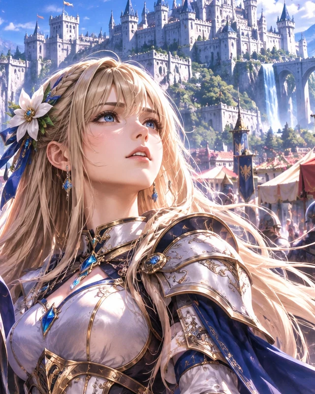

アクションを選んで再生してください。
職業・衣装を選択
実際の戦闘衣装を読み込みます（仮の配色表示から切替）。
完成顔を選択（女性10種類）
全10職業で衣装の下の実人体（太腿・すね・足）を保持します。ボタンは登録済みの実モーションのみ表示し、未登録の勝利ポーズ等は作りません。戦闘本体は変更しません。
美少女3Dパーツを選択（各10種以上）
顔のスライダー：鼻・目元・口・顎
「髪だけ表示（本体透明）」で顔・目元・首・胴体を隠して、着脱ウィッグの毛根と密度だけを確認できます。戻すと顔と全身を表示します。
v28では髪の毎フレームの物理演算を停止。頭皮に固定した静的ヘアカードで根元を細く、毛先へ自然にテーパーします。
頭部と同形の透明ウィッグ土台を使用.毛根と描画面を頭皮の外側へ補正します。毛量は1・3・10倍から選択可能で、10倍はスマホで重くなる場合があります。「透明土台を可視化」で位置を確認できます。
3D元モデルを読み込んでいます…
指で回転・ピンチでズームできます。顔の造形を変える場合は「顔・髪を編集する」に移動してください。
登録人物原画

女性主人公・第1章（仮合わせ）
女主人公の登録原画：金髪ロング、青い瞳、銀色の鎧と濃青の布。実際の衣装を原画へ近づけるための比較基準です。
v31：目のサイズは縦横から自動決定。目の前後位置と分離し、カラコンは17色＋自由色に対応。真円の黒目・瞳孔を維持。髪は実顔面と女性胴体の三角形表面との接触を判定し、肩・胸の簡易判定も併用します。
顔・髪の編集画面へ